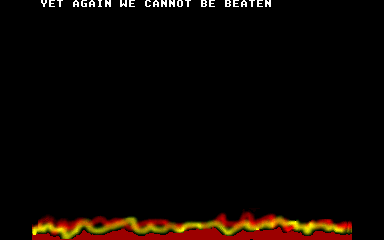

aNaL tUcK!!!11
aTaR1 fAlC0n 0nLy!!!1!
Released: 16 Apr 1995 18:55!!!!
Also mirrored at

This was out first ever Faclon 070 demo but what a demo!!! The first ever one-scanline full frame trucolour fire on C-lab's bird of pray!
Even more amazing it was done in less than half an hour!!! Why? Because that's all the time we had before the deadline for the demo competition! This demo was done for the Fried Bits 3 96K demo compo. We suddenly decided in the last half an hour before the deadline that the 96K demo competition would present a good enough challenge for us. (We would have entered the best demo compo, but it was too easy- you don't know how lucky you were to win it, Lazer!)
Our demo was shown right after Inter's mega-long 96K-tro "Terrorise Your Soul", which just pipped us to the post to win the competition. Their demo wasn't too bad, but our demo with it's simplicity and brevity (Hey I can use big words!!!) really blow it away!
This is a wierd one, because it went out our old names before we decide to revamp our image and launch our website! Old Fart used to be called "Nonce" and Doddering Git used to be called "Jesse". This (and the title of the demo) was actually meant to be an ironic political statement about sexual and gender role models within a corrupt Western society, but unfortunately a lot of people got the wrong end of the stick, so we decided to ditch the old names for the next demo.
More importantly, Dame Vera Lynn wasn't credited! He wasn't too pleased with that to say the least. [You can say that again- Dame VL] Oh OK then... He wasn't too pleased with that to say the least. Ha ha ha ha ha!!! [Top joke! Classic, man! -Dame VL]